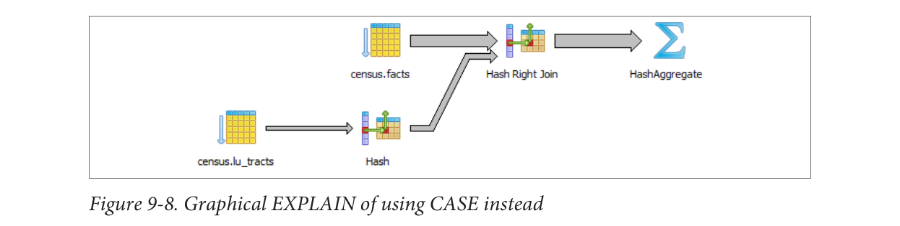

Chúng ta bây giờ viết lại truy vấn bằng cách sử dụng CASE. Bạn sẽ thấy rằng truy vấn tiết kiệm, được hiển thị trong Ví dụ 9-15, thường nhanh hơn và dễ đọc hơn nhiều.
SELECT T.tract_id, COUNT(*) As tot,
COUNT(CASE WHEN F.fact_type_id = 131 THEN 1 ELSE NULL END) AS type_1
FROM census.lu_tracts AS T LEFT JOIN census.facts AS F
ON T.tract_id = F.tract_id
GROUP BY T.tract_id;Hình 9-8 cho thấy kế hoạch đồ họa của Ví dụ 9-15.

Mặc dù truy vấn được viết lại của chúng ta vẫn không sử dụng chỉ mục fact_type, nhưng nó nhanh hơn so với việc sử dụng các truy vấn con vì trình lập kế hoạch chỉ quét bảng facts một lần. Một kế hoạch ngắn hơn thường không chỉ dễ hiểu hơn mà còn thường hoạt động tốt hơn so với một kế hoạch dài hơn, mặc dù không phải lúc nào cũng vậy.
Sử dụng Filter thay vì CASE
PostgreSQL 9.4 cung cấp cấu trúc FILTER mới, mà chúng tôi đã giới thiệu trong “Câu lệnh FILTER cho các tổng hợp” trên trang 131. FILTER thường có thể thay thế CASE trong các biểu thức tổng hợp. Không chỉ cú pháp này dễ nhìn hơn, mà trong nhiều trường hợp còn hoạt động tốt hơn. Chúng tôi lặp lại Ví dụ 9-15 với phiên bản filter tương đương trong Ví dụ 9-16.
SELECT T.tract_id, COUNT(*) As tot,
COUNT(*) FILTER(WHERE F.fact_type_id = 131) AS type_1
FROM census.lu_tracts AS T LEFT JOIN census.facts AS F
ON T.tract_id = F.tract_id
GROUP BY T.tract_id;Đối với ví dụ cụ thể này, hiệu suất của FILTER chỉ nhanh hơn khoảng một mili giây so với phiên bản CASE của chúng tôi, và các kế hoạch thì gần như giống nhau.
Viết các truy vấn tốt hơn|177